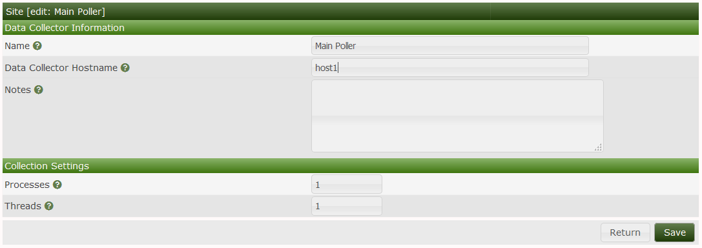

As of Cacti 1.x remote polling is now supported remote polling allows for devices to be monitored by different servers either geographically closer to the node being monitored or by a redundant server for load balancing.
To accomplish this a master cacti instance must be installed along with a remote poller which is a full cacti installation the remote poller must be able to reach and read/write to the database hosted on the main server. Cacti will display all the devices weather on the remote or main poller on the main poller dashboard for an easy view.
The below page shows the current online collector aka pollers these are used to reach out to the device either by SNMP or Ping all traffic would originate from the poller assigned to the device.
As of Cacti 1.x remote polling is now supported remote polling allows for devices to be monitored by different servers either geographically closer to the node being monitored or by a redundant server for load balancing.
To accomplish this a master cacti instance must be installed along with a remote poller which is a full cacti installation the remote poller must be able to reach and read/write to the database hosted on the main server. Cacti will display all the devices weather on the remote or main poller on the main poller dashboard for an easy view.
The below page shows the current online collector aka pollers these are used to reach out to the device either by SNMP or Ping all traffic would originate from the poller assigned to the device.
The Main poller resides on the local server that you are logged into this also serves as the master poller for a distributed system using remote pollers.


The below page allows you to modify remote poller specific details such as username and password You will also be able to test the connection between the main poller and the remote poller.
We will need to make some config changes to the mysql configuration to allow the remote poller to talk to the main poller
mysql -u root mysql -e "GRANT ALL ON cacti.* TO cactidb@<ip of remote poller host> IDENTIFIED BY 'password';"
mysql -u root mysql -e "GRANT SELECT ON mysql.time_zone_name TO cacti@<ip of remote poller host> IDENTIFIED BY 'password';"
Next setup the server for cacti and update the config.php located in /cacti/include/config.php with the remote database details and credentials.
#$rdatabase_type = 'mysql';
#$rdatabase_default = 'cacti';
#$rdatabase_hostname = 'localhost'; <<< IP/Hostname of main server
#$rdatabase_username = 'cactiuser';
#$rdatabase_password = 'cactiuser';
#$rdatabase_port = '3306';
#$rdatabase_retries = 5;
#$rdatabase_ssl = false;
#$rdatabase_ssl_key = '';
#$rdatabase_ssl_cert = '';
#$rdatabase_ssl_ca = '';
You will now need to install Cacti on the remote server selecting the new remote poller option

Copyright (c) 2004-2020 The Cacti Group